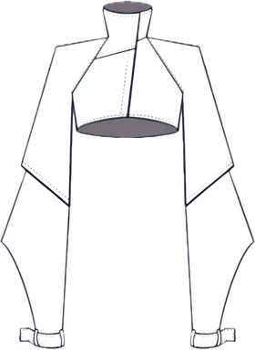
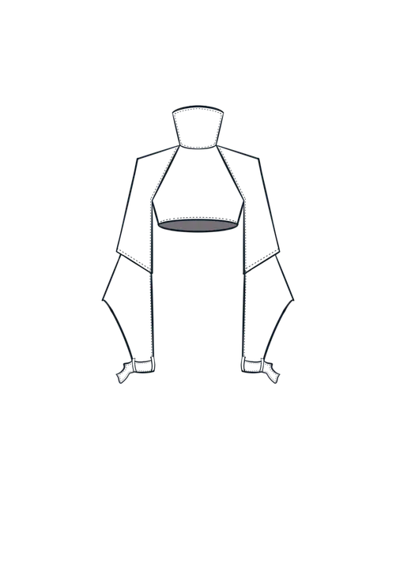

Season A/W 26 · Western · Size S · Style #AW26C9G5 · 27/05/25
Denim jacket with raglan sleeve
| Bust round | 38” |
|---|---|
| Collar height | 4” |
| Full length from HSP | 12.5” |
| Full sleeve length | 29” |
| HSP to elbow | 15” |
| Shoulder to style line | 9” |
| Wrist round | 11” |
Details — high neck collar, raglan sleeve, asymmetric panel, pointy and structured style line, cuff strap, separating zipper
Trims & fabric — navy blue denim, metal railroad zipper, sewing thread